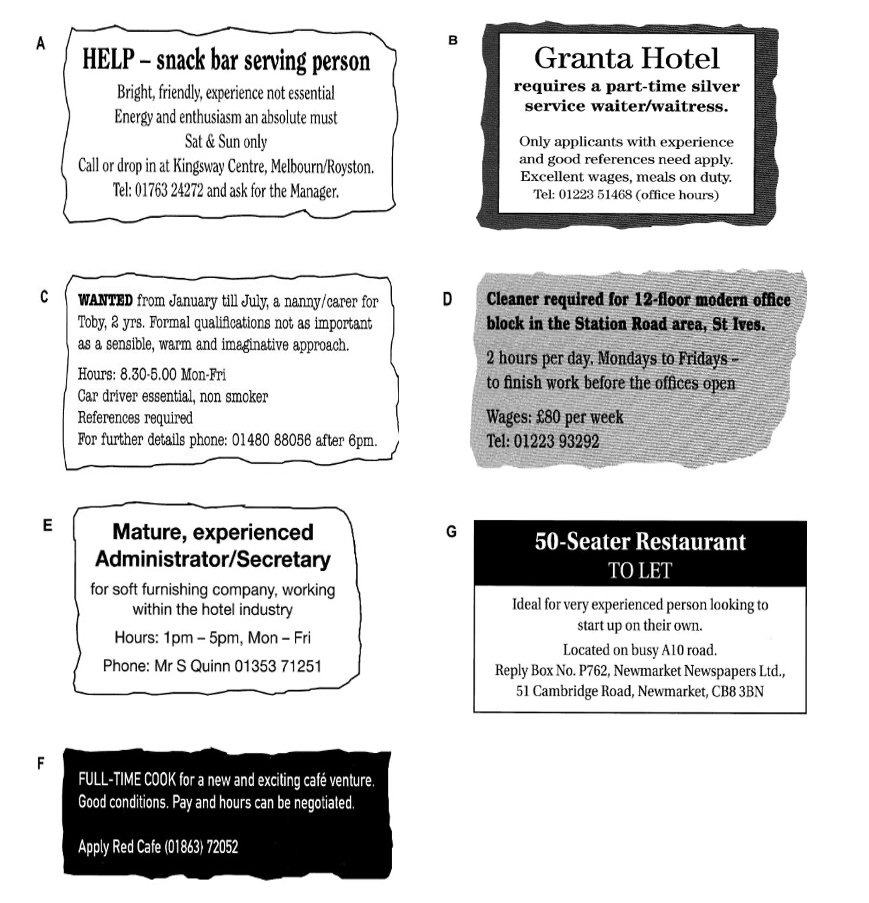

You should spend about 20 minutes on Questions 1–14, which are based on Reading Passages below.
Write answers to questions in boxes 1–14 on your answer sheet.
Read the text below and answer Questions 1–6.

Look at the seven job advertisements, A–G, and read the descriptions of
people below.
Which is the most suitable job for each person?
Write the correct letter, A–G, in boxes 1–6 on your answer sheet.
a person with two small children who wants a few hours a week of unskilled work in the early mornings
a person with no experience or qualifications who is looking for a short term full-time job, Monday to Friday
a lively student with no experience, who cannot work on weekdays
a person with more than 20 years’ experience in catering who would like to run a business
a catering college graduate who is now looking for his first full-time job
a person with many years’ experience working in hotels who is now looking for well-paid part-time employment in a hotel
Read the text below and answer Questions 7-14.
Most tickets may be used for travel by Sleeper, subject to availability, and a reservation in a two-berth cabin can be made for £25, except in the case of Solo and Special tickets, which include Sleeper reservations in the fare. The price includes early morning tea or coffee and biscuits. A continental or hot breakfast can be ordered if you wish. Choose from a range of tickets to suit your journey.
A – SuperApex
Only available for travel after 9 am. Book at least 2 weeks ahead and travel between Edinburgh or Glasgow and London for the unbeatable price of £59 return. This ticket is non-refundable unless the service is cancelled.
B – Apex
Areal bargain fare. Only £69 return between Edinburgh or Glasgow and London. Great value Sleeper travel available by booking at least a week before outward travel. Ticket refundable on payment of a 25% administrative charge.
C – SuperSaver
Available right up to the day of travel and valid any day except these peak days: all Fridays, also 18-30 December, 31 March and 28 May. Departures between midnight and 2 am count as previous day’s departures. London to Glasgow or Edinburgh £82.
D – Saver
This flexible ticket is valid every day and can be bought on the day of travel. Your ticket allows standard class travel on any train between 10 am and midnight. No seat reservations available. London to Glasgow or Edinburgh £95.
E – Solo
Treat yourself and enjoy exclusive use of a Standard cabin. Solo is an inclusive return travel ticket with Sleeper reservations for one or both directions. Outward and return reservations should be made at the time of booking. The journey must include a Saturday night away. £140-£160 London to Edinburgh/Glasgow return.
F – Special
Special is an inclusive return travel package for two people including sleeper reservations for one or both directions. It can mean savings for both of you. Outward and return reservations should be made at the time of booking. From £120.
G – Standard
Not the cheapest option but available up to the time of travel and valid for all trains and at all times. You are advised to turn up early for travel on a Friday.
Look at the seven types of train ticket, A–G, on the reading passage
"INTERCITY Sleeper between London and Scotland".
For which type of train ticket are the following statements true?
Write the correct letter, A–G, in boxes 7–14 on your answer sheet.
NB: You may use any letter more than once.
There are advantages if you book a journey with a friend.
You cannot use this on a Friday.
This can be used without restriction.
This can only be booked up to 7 days before departure.
It’s the cheapest ticket available but there is a restriction on departure time.
If you decide not to travel after you have bought the ticket, you cannot get your money back.
This is not available if you’re travelling out on a Monday and back the next day.
You cannot use this ticket for departures between midnight and 10 am.